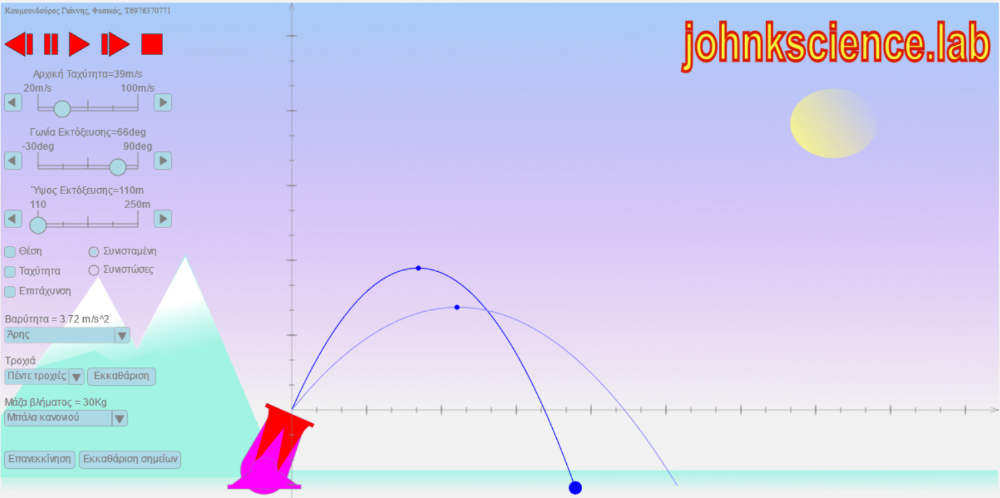
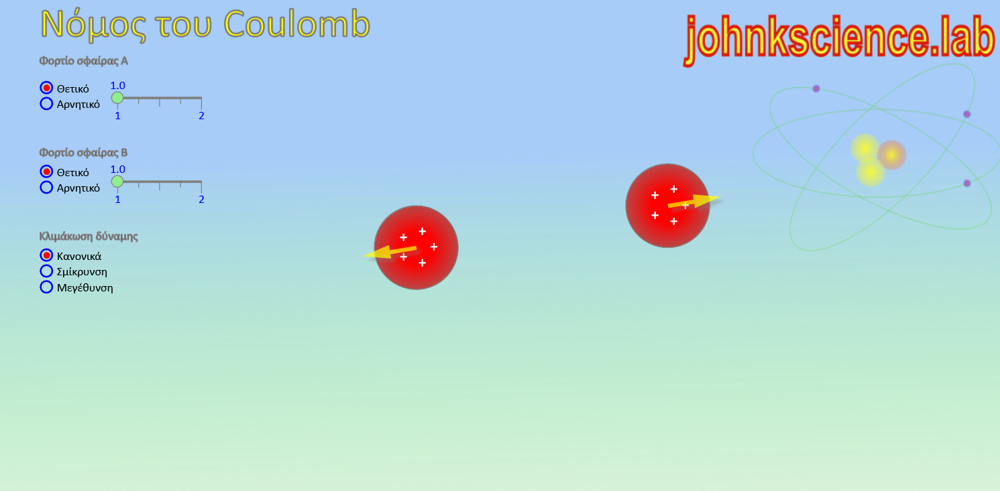
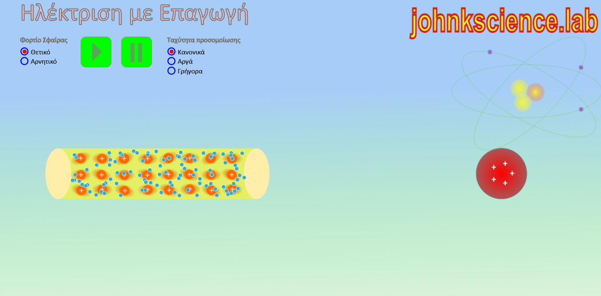
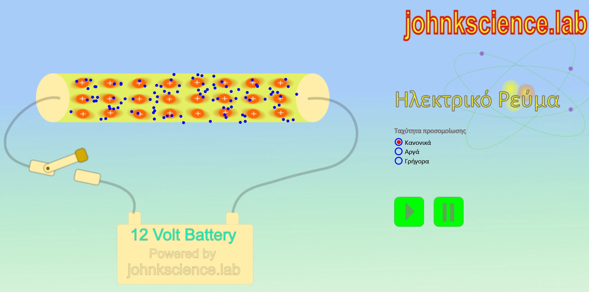
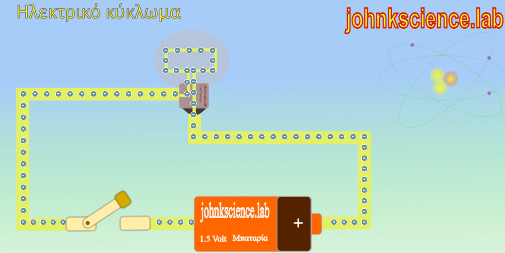
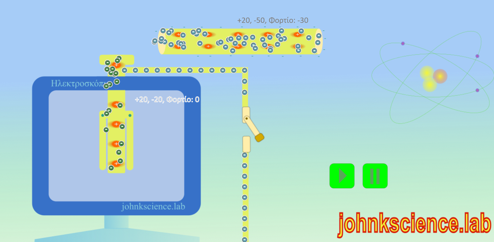
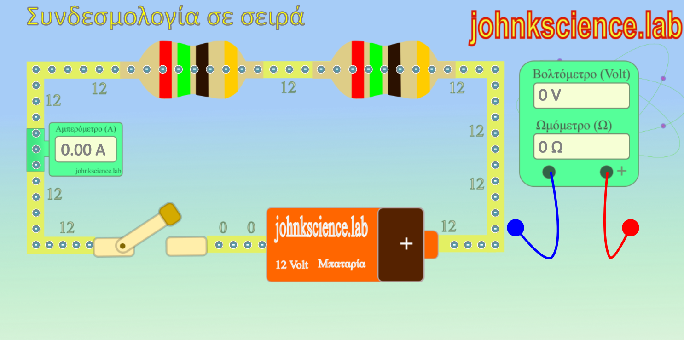
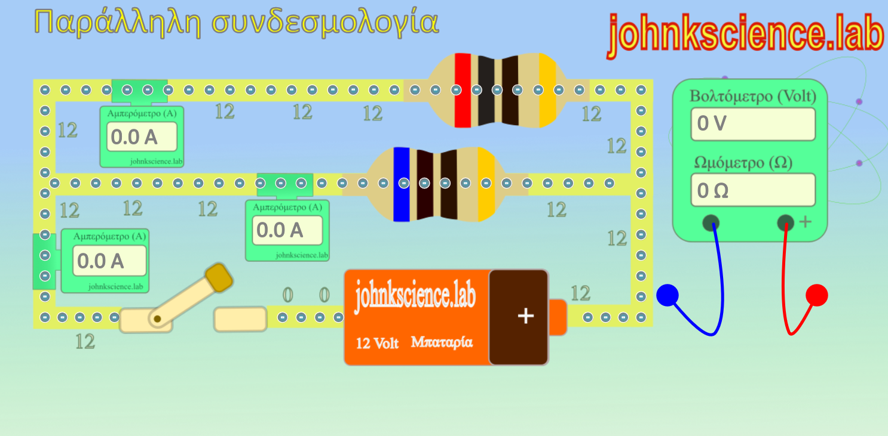
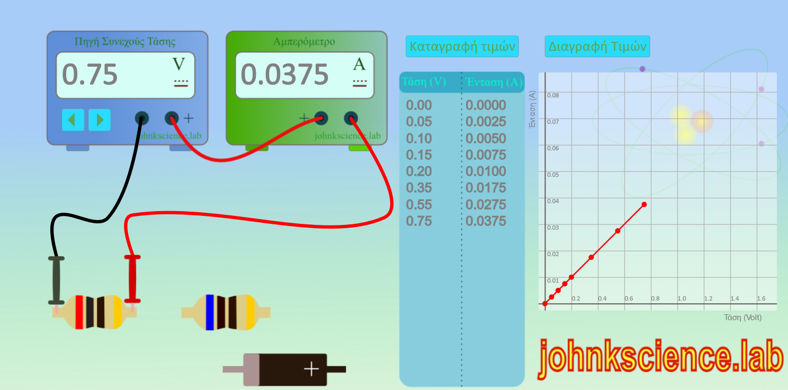
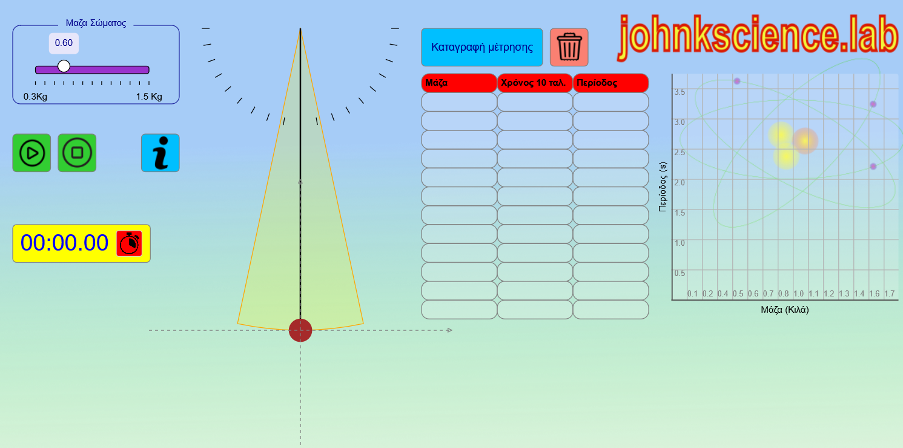

Εικονικά εργαστήρια θετικών επιστημών από το johnkscience.lab
Εκπαίδευση, 28 Ιουν, 2024

Είναι πλέον η τελευταία τάση στην εκπαίδευση των θετικών επιστημών, των μαθηματικών και όχι μόνο, να χρησιμοποιούμε τα εικονικά εργαστήρια.
Δηλαδή στον χώρο του ο μαθητής ή η μαθήτρια με την σωστή καθοδήγηση αρχικά, αλλά και ανεξάρτητα αργότερα, να πειραματιστεί με υλικά αλλά και έννοιες που μπορεί να είναι δυσπρόσιτες ακόμα και σε ένα μεγάλο εργαστήριο φυσικών επιστημών.
Αυτό είναι εύκολο με την χρήση ηλεκτρονικών προγραμμάτων που προσομοιώνουν ένα κανονικό εργαστήριο με την βοήθεια του διαδικτύου και ενός υπολογιστή ή ενός κινητού.
Με την χρήση των εργαστηρίων ενθαρρύνεται η επιστημονική έρευνα, η διαδραστικότητα, το αόρατο γίνεται ορατό, καταδεικνύονται με οπτικό τρόπο τα αφηρημένα νοητικά μοντέλα και καθοδηγείται ο μαθητής στην παραγωγική εξερεύνηση.
Ένα τέτοιο εργαστήριο διατίθεται από το αυτόν εδώ τον διαδικτυακό τόπο...
Κουμουνδούρος Γιάννης
Εργαστήριο Νόμου Coulomb
Φυσική, 30 Ιουνίου, 2024

Σε αυτό το εργαστήριο θα πειραματιστείτε με τον νόμο του coulomb. Δύο φορτία όταν έρθουν σε κάποια απόσταση βυθισμένα μέσα σε κάποιο υλικό (ή στο κενό), το ένα ασκεί δύναμη στο άλλο.
Ακολουθήσετε μια σειρά από προετοιμασμένα πειράματα ή δημιουργήσετε τα δικά σας, μόνοι σας ή με την βοήθεια του καθηγητή σας!
Μπορείτε να πειραματιστείτε με τις παρακάτω ιδιότητες:
- Την απόσταση των δύο φορτίων.
- Το φορτίο της κάθε σφαίρας.
- Το υλικό μέσα στο οποίο είναι βυθισμένα τα φορτία, ηλεκτρική σταθερά.
- Τα διανύσματα των δυνάμεων.
Με σκοπό να αποδείξετε ότι το μέτρο της δύναμης είναι ανάλογο του γινομένου των δύο φορτίων και αντιστρόφως ανάλογο του τετραγώνου της μεταξύ τους απόστασης, αλλά
και να κατανοήσετε εποπτικά τον διανυσματικό χαρακτήρα της δύναμης ως προς το μέτρο, τη διεύθυνση και τη φορά. Αλλά και να κατανοήσετε τον τρίτο νόμο του Νεύτωνα (δράση-αντίδραση).
Καλή διασκέδαση!
Δημιουργός: Κουμουνδούρος Γιάννης
Εργαστήριο, Ηλέκτριση με επαγωγή
Φυσική, 7 Δεκεμβρίου, 2024

Σε αυτό το εργαστήριο θα πειραματιστείτε με την ηλέκτριση μιας ράβδου από μια φορτισμένη σφαίρα.
Ακολουθήσετε μια σειρά από προετοιμασμένα πειράματα ή δημιουργήσετε τα δικά σας, μόνοι σας ή με την βοήθεια του καθηγητή σας!
Μπορείτε να πειραματιστείτε με τις παρακάτω ιδιότητες:
- Παρατηρείστε την άτακτη κίνηση των ηλεκτρονίων μέσα στο κρυσταλλικό πλέγμα.
- Παρατηρήστε την κίνηση των ηλεκτρονίων καθώς η φορτισμένη σφαίρα πλησιάζει την ράβδο.
- Εκτιμήστε το τοπικό φορτίο στα δύο άκρα της ράβδου όταν η σφαίρα έχει πλησιάσει την ράβδο.
- Αλλάξτε το φορτίο της φορτισμένης σφαίρας και παρατηρήστε εκ νέου την κίνηση των ηλεκτρονίων.
- Παρατηρήστε ότι κινούνται μόνο τα ελεύθερα ηλεκτρόνια και όχι τα σταθερά ιόντα.
Με σκοπό να κατανοήσουμε το φαινόμενο σε μικροσκοπικό επίπεδο, δηλαδή να κατανοήσουμε την κίνηση των ηλεκτρικών φορτίων, αλλά
και να κατανοήσουμε την έννοια της ηλέκτρισης στο σύνολό της.
Καλή διασκέδαση!
Δημιουργός: Κουμουνδούρος Γιάννης
Εργαστήριο, Ηλεκτρικό ρεύμα
Φυσική, 7 Δεκεμβρίου, 2024

Σε αυτό το εργαστήριο θα πειραματιστείτε με την κίνηση των ελεύθερων ηλεκτρονίων μέσα σε ένα αγωγό που είναι συνδεδεμένος με μια μπαταρία.
Ακολουθήσετε μια σειρά από προετοιμασμένα πειράματα ή δημιουργήσετε τα δικά σας, μόνοι σας ή με την βοήθεια του καθηγητή σας!
Μπορείτε να πειραματιστείτε με τις παρακάτω ιδιότητες:
- Παρατηρείστε την άτακτη κίνηση των ηλεκτρονίων μέσα στο κρυσταλλικό πλέγμα.
- Παρατηρήστε την προσανατολισμένη κίνηση των ηλεκτρονίων όταν κλείσουμε τον διακόπτη.
- Πειραματιστείτε με τις έννοιες του ανοικτού και κλειστού κυκλώματος καθώς και με την έννοια του ανοικτού και κλειστού διακόπτη..
- Παρατηρήστε ότι κινούνται μόνο τα ελεύθερα ηλεκτρόνια και όχι τα σταθερά ιόντα.
- Παρατηρήστε ότι τα ηλεκτρόνια εκτελούν δύο ειδών κινήσεων.
Με σκοπό να κατανοήσουμε το φαινόμενο σε μικροσκοπικό επίπεδο, δηλαδή να κατανοήσουμε την κίνηση των ηλεκτρικών φορτίων όταν ο αγωγός βρίσκεται μέσα στο ηλεκτρικό πεδίο της μπαταρίας, αλλά και
να κατανοήσουμε την έννοια του ηλεκτρικού ρεύματος σε μικροσκοπικο επίπεδο.
Καλή διασκέδαση!
Δημιουργός: Κουμουνδούρος Γιάννης
Εργαστήριο, Ηλεκτρικό κύκλωμα
Φυσική, 7 Δεκεμβρίου, 2024

Σε αυτό το εργαστήριο θα πειραματιστείτε με την κίνηση των ελεύθερων ηλεκτρονίων μέσα σε ένα αγωγό που είναι συνδεδεμένος με μια μπαταρία.
Ακολουθήσετε μια σειρά από προετοιμασμένα πειράματα ή δημιουργήσετε τα δικά σας, μόνοι σας ή με την βοήθεια του καθηγητή σας!
Μπορείτε να πειραματιστείτε με τις παρακάτω ιδιότητες:
- Παρατηρήστε την προσανατολισμένη κίνηση των ηλεκτρονίων όταν κλείσουμε τον διακόπτη.
- Παρατηρήστε την κίνηση των ηλεκτρονίων μέσα στον λαμπτήρα και συζητήστε πως αυτός φωτοβολεί.
- Πειραματιστείτε με τις έννοιες του ανοικτού και κλειστού κυκλώματος καθώς και με την έννοια του ανοικτού και κλειστού διακόπτη.
- Παρατηρήστε την πραγματική φορά κίνησης των ηλεκτρονίων μέσα στο κύκλωμα και συζητήστε για την συμβατική φορά.
Με σκοπό να κατανοήσουμε το φαινόμενο σε μικροσκοπικό επίπεδο, δηλαδή να κατανοήσουμε την κίνηση των ηλεκτρικών φορτίων όταν ο αγωγός βρίσκεται μέσα στο ηλεκτρικό πεδίο της μπαταρίας, αλλά και
να κατανοήσουμε την έννοια του ηλεκτρικού ρεύματος σε μικροσκοπικό επίπεδο.
Καλή διασκέδαση!
Δημιουργός: Κουμουνδούρος Γιάννης
Εργαστήριο, Ηλεκτροσκόπιο
Φυσική, 7 Δεκεμβρίου, 2024

Σε αυτό το εργαστήριο θα πειραματιστείτε με φόρτιση και την εκφόρτιση ενός ηλεκτροσκοπίου.
Ακολουθήσετε μια σειρά από προετοιμασμένα πειράματα ή δημιουργήσετε τα δικά σας, μόνοι σας ή με την βοήθεια του καθηγητή σας!
Μπορείτε να πειραματιστείτε με τις παρακάτω ιδιότητες:
- Παρατηρήστε τα μέρη του ηλεκτροσκοπίου, σώμα, δίσκος, στέλεχος και κινητά ελάσματα.
- Φορτίστε το ηλεκτροσκόπιο με μια φορτισμένη ράβδο με επαφή.
- Παρατηρήστε την άτακτη κίνηση των ηλεκτρονίων αλλά και την μεταφορά ηλεκτρονίων από την ράβδο προς το ηλεκτροσκόπιο.
- Μετρήστε την διαφορά φορτίου και επαληθεύστε την αρχή διατήρησης του ηλεκτρικού φορτίου.
- Εκφορτίστε το ηλεκτροσκόπιο και παρατηρήστε την προσανατολισμένη κίνηση των ηλεκτρονίων προς την Γη.
Με σκοπό να κατανοήσουμε το φαινόμενο σε μικροσκοπικό επίπεδο, δηλαδή να κατανοήσουμε την κίνηση των ηλεκτρικών φορτίων κατά την φόρτιση και εκφόρτιση του ηλεκτροσκοπίου
Καλή διασκέδαση!
Δημιουργός: Κουμουνδούρος Γιάννης
Εργαστήριο, κύκλωμα με αντιστάτες σε σειρά
Φυσική, 7 Δεκεμβρίου, 2024

Σε αυτό το εργαστήριο θα πειραματιστείτε με την λειτουργία ενός κυκλώματος που αποτελείται από δύο αντιστάτες σε σειρά.
Ακολουθήσετε μια σειρά από προετοιμασμένα πειράματα ή δημιουργήσετε τα δικά σας, μόνοι σας ή με την βοήθεια του καθηγητή σας!
Μπορείτε να πειραματιστείτε με τις παρακάτω ιδιότητες:
- Παρατηρήστε τα μέρη του κυκλώματος, αντιστάτες, μπαταρία, καλώδια, ελεύθερα ηλεκτρόνια, αμπερόμετρο, βολτόμετρο.
- Εξοικειωθείτε με την έννοια του ανοικτού και κλειστού κυκλώματος καθώς και με την έννοια του ανοικτού και κλειστού διακόπτη.
- Συζητήστε για τον χρωματικό κώδικα των αντιστάσεων.
- Παρατηρήστε την προσανατολισμένη κίνηση των ηλεκτρονίων και το γεγονός ότι και οι δύο αντιστάτες διαρρέονται από το ίδιο ρεύμα.
- Παρατηρείστε τα δυναμικά κατά μήκος του κυκλώματος, συζητήστε για τη διαφορά δυναμικού και μετρήστε με το βολτόμετρο την διαφορά δυναμικού.
- Συζητήστε για την έννοιες της σύνδεσης των στοιχείων σε σειρά και παράλληλα.
Με σκοπό να κατανοήσουμε το φαινόμενο σε μικροσκοπικό επίπεδο, δηλαδή να κατανοήσουμε την κίνηση των ηλεκτρικών φορτίων, αλλά και
πιο περίπλοκων εννοιών όπως είναι η έννοια του δυναμικού.
Καλή διασκέδαση!
Δημιουργός: Κουμουνδούρος Γιάννης
Εργαστήριο, κύκλωμα με αντιστάτες παράλληλα
Φυσική, 7 Δεκεμβρίου, 2024

Σε αυτό το εργαστήριο θα πειραματιστείτε με την λειτουργία ενός κυκλώματος που αποτελείται από δύο αντιστάτες σε παράλληλη συνδεσμολογία.
Ακολουθήσετε μια σειρά από προετοιμασμένα πειράματα ή δημιουργήσετε τα δικά σας, μόνοι σας ή με την βοήθεια του καθηγητή σας!
Μπορείτε να πειραματιστείτε με τις παρακάτω ιδιότητες:
- Παρατηρήστε τα μέρη του κυκλώματος, αντιστάτες, μπαταρία, καλώδια, ελεύθερα ηλεκτρόνια, αμπερόμετρο, βολτόμετρο.
- Εξοικειωθείτε με την έννοια του ανοικτού και κλειστού κυκλώματος καθώς και με την έννοια του ανοικτού και κλειστού διακόπτη.
- Συζητήστε για τον χρωματικό κώδικα των αντιστάσεων.
- Παρατηρήστε την προσανατολισμένη κίνηση των ηλεκτρονίων και το γεγονός ότι και οι δύο αντιστάτες διαρρέονται από το ίδιο ρεύμα.
- Παρατηρείστε τα δυναμικά κατά μήκος του κυκλώματος, συζητήστε για τη διαφορά δυναμικού και μετρήστε με το βολτόμετρο την διαφορά δυναμικού.
- Συζητήστε για την έννοιες της σύνδεσης των στοιχείων σε σειρά και παράλληλα.
Με σκοπό να κατανοήσουμε το φαινόμενο σε μικροσκοπικό επίπεδο, δηλαδή να κατανοήσουμε την κίνηση των ηλεκτρικών φορτίων, αλλά και
πιο περίπλοκων εννοιών όπως είναι η έννοια του δυναμικού.
Καλή διασκέδαση!
Δημιουργός: Κουμουνδούρος Γιάννης
Εργαστήριο, νόμος του Ωμ
Φυσική, 7 Δεκεμβρίου, 2024

Σε αυτό το εργαστήριο θα επαναλάβετε το πείραμα που έκανε ο Ohm.
Ακολουθήσετε μια σειρά από προετοιμασμένα πειράματα ή δημιουργήσετε τα δικά σας, μόνοι σας ή με την βοήθεια του καθηγητή σας!
Μπορείτε να πειραματιστείτε με τις παρακάτω ιδιότητες:
- Παρατηρήστε τα μέρη του κυκλώματος, αντιστάτες, δίοδος, πηγή τάσης, καλώδια, αμπερόμετρο, βολτόμετρο.
- Εξοικειωθείτε με την συνδεσμολογία.
- Αλλάξτε την τάση της πηγής και παρατηρήστε την μεταβολή στην ένταση του ρεύματος.
- Καταγράψτε τις τιμές σε πίνακα τιμών και σχεδιάστε την γραφική παράσταση.
- Παρατηρείστε ότι για τους ωμικούς αντιστάτες η ένταση είναι ανάλογη της τάσης, ενώ για την δίοδο όχι.
- Υπολογίστε την αντίσταση κάθε ωμικού αντιστάτη, και παρατηρήστε ότι αυτή είναι σταθερή.
- Μελετήστε την πολικότητα της διόδου, την χαρακτηριστική της καμπύλη και το γεγονός ότι η αντίσταση της δεν είναι σταθερή.
Καλή διασκέδαση!
Δημιουργός: Κουμουνδούρος Γιάννης
Εικονικά Εργαστήρια Απλού Αρμονικού Ταλαντωτή
Φυσική, 26 Φεβρουαρίου, 2025

Εξερευνήστε τις ιδιότητες του απλού αρμονικού ταλαντωτή μέσα από τρία διαδραστικά εικονικά εργαστήρια.
Ακολουθήστε μια σειρά από προετοιμασμένα πειράματα ή δημιουργήστε τα δικά σας, μόνοι σας ή με τη βοήθεια του καθηγητή σας!
Μπορείτε να πειραματιστείτε με τις παρακάτω ιδιότητες:
- Αλλάξτε τη μάζα του εκκρεμούς και παρατηρήστε την επίδραση στην περίοδο.
- Αλλάξτε τη μέγιστη γωνία ταλάντωσης και παρατηρήστε την επίδραση στην περίοδο.
- Αλλάξτε το μήκος του σχοινιού και παρατηρήστε την επίδραση στην περίοδο.
- Καταγράψτε τις τιμές σε πίνακες τιμών και σχεδιάστε τις γραφικές παραστάσεις.
- Μελετήστε τις σχέσεις μεταξύ των παραμέτρων και της περιόδου.
Καλή διασκέδαση!
Δημιουργός: Κουμουνδούρος Γιάννης
Σχετικά με εμένα
Κουμουνδούρος Ιωάννης
Φυσικός Ε.Κ.Π.Α.

Εργάζεται ως Καθηγητής θετικών επιστημών στον ιδιωτικό τομέα παραδίδοντας κατ' οίκον μαθήματα από το 2002
T. 6976370771
E-mail: johnkscience@yahoo.com
Ενδιαφέροντα
- Γράφει άρθρα επιστημονικού ενδιαφέροντος και άρθρα σχετικά με την εκπαίδευση που τα δημοσιεύει στο διαδίκτυο.
- Συντηρεί και γράφει στην διαδικτυακή σελίδα johnkscience.blog αλλά και την johnkscience.notes
- Ενδιαφέρεται για τον προγραμματισμό και ιδιαίτερα για την JAVA, JavaScript, HTML, CSS
- Μου αρέσει να διαβάζω βιβλία και μάλιστα ενδιαφέρομαι για την Φυσική, Μαθηματικά, Φιλοσοφία, Προγραμματισμός, Επιστημονική φαντασία κ.α.
- Επιμόρφωση και δια βίου μάθηση
- Συγγραφή σημειώσεων και μικρών βιβλίων σχετικά με τα μαθήματα της Φυσικής, της Χημείας και των Μαθηματικών του Γυμνασίου και του Λυκείου.
Επιμόρφωση στην Κβαντομηχανική
από το Παν/μιο Κρήτης με καθηγητή τον κύριο Στέφανο Τραχανά


Πρόσφατες Δημοσιεύσεις
Η διαλειμματική επανάληψη και το πνεύμα της άσκησης
Μία απατηλή αίσθηση μεταξύ των διδασκομένων, στην οποία έχουμε όλοι υποπέσει, είναι το "μαθαίνω μία και έξω!" χωρίς την χρήση της επαναληπτικής μεθόδου που είναι τόσο κουραστική. Η μάθηση συνίσταται στο να δημιουργήσεις μία σύνδεση μεταξύ της νέας πληροφορίας και αυτών των πληροφοριών που είναι μόνιμα αποθηκευμένες στην μνήμη μας. Η νέα πληροφορία πρέπει να περάσει από την βραχυπρόθεσμη μνήμη στην μνήμη μακράς διαρκείας. Για να αποθηκευτεί μακροπρόθεσμα αλλά και να διατηρηθεί αυτή η πληροφορία στην μνήμη μας μπορούμε να χρησιμοποιήσουμε την επαναληπτική μέθοδο και μάλιστα στην αποδοτικότερή της μορφή που ονομάζεται διαλειμματική μάθηση.
Εικονικά εργαστήρια
Είναι πλέον η τελευταία τάση στην εκπαίδευση των θετικών επιστημών, των μαθηματικών και όχι μόνο, να χρησιμοποιούμε τα εικονικά εργαστήρια. Δηλαδή στον χώρο του ο μαθητής ή η μαθήτρια με την σωστή καθοδήγηση αρχικά, αλλά και ανεξάρτητα αργότερα, να πειραματιστεί με υλικά αλλά και έννοιες που μπορεί να είναι δυσπρόσιτες ακόμα και σε ένα μεγάλο εργαστήριο φυσικών επιστημών. Αυτό είναι εύκολο με την χρήση ηλεκτρονικών προγραμμάτων που προσομοιώνουν ένα κανονικό εργαστήριο με την βοήθεια του διαδικτύου και ενός υπολογιστή ή ενός κινητού. Με την χρήση των εργαστηρίων ενθαρρύνεται η επιστημονική έρευνα, η διαδραστικότητα, το αόρατο γίνεται ορατό, καταδεικνύονται με οπτικό τρόπο τα αφηρημένα νοητικά μοντέλα και καθοδηγείται ο μαθητής στην παραγωγική εξερεύνηση. Ένα τέτοιο εργαστήριο διατίθεται από το αυτόν εδώ τον διαδικτυακό τόπο...
Ο ζωολογικός κήπος των υποατομικών σωματιδίων
Η ατομική δομή της ύλης συνίσταται στο γεγονός ότι η ύλη αποτελείται από διακριτά θεμελιώδη σωμάτια τα οποία δεν τέμνονται περισσότερο και μεταξύ τους υπάρχει κενό. Σαν φιλοσοφική ιδέα ξεκίνησε από τον Λεύκιππο και τον Δημόκριτο (4ος αιώνας π.Χ.). Για πολλούς αιώνες ξεχάστηκε και αναβίωσε στις αρχές του 19ου αιώνα από τον Ντάλτον (Dalton). Στις αρχές του 20ου αιώνα οι ανακαλύψεις ήταν ραγδαίες με πολύ σημαντικά πειράματα, με αποτέλεσμα να θεμελιωθεί η σύγχρονη φυσική. Σήμερα γνωρίζουμε ότι η ύλη αποτελείται από τουλάχιστον 12 σωμάτια ύλης και άλλα τόσα αντισωμάτια που αποτελούν την αντιύλη. Αλλά ας δούμε τα πράγματα πιο αναλυτικά...
Ακολουθήστε με
Επικοινωνία: 6976370771
Email: johnkscience@yahoo.com
johnkscience.blog: johnkscience.blog
johnkscience.notes: johnkscience.notes
johnkscience.articles: johnkscience.articles
 Συνδρομή Ροής
Συνδρομή Ροής
Υπάρχει η δυνατότητα να λαμβάνετε τα νέα άρθρα που δημοσιεύονται στο johnkscience.blog την στιγμή που δημοσιεύονται κατευθείαν μέσα από το πρόγραμμα της ηλεκτρονικής αλληλογραφίας και ροών σας.
Για να εγγραφείτε μέσα από το πρόγραμμα ροών σας θα σας ζητηθεί η παρακάτω διεύθυνση ροής.
https://koumoundouros.neocities.org/feed.txt
Εγγραφείτε
Για να εγγραφείτε ώστε να λαμβάνετε στο ηλεκτρονικό σας ταχυδρομείο τα νέα από την εκπαίδευση και τις φυσικές επιστήμες αλλά και το υπόλοιπο εκπαιδευτικό υλικό που αναρτάται στο
johnkscience.blog
συμπληρώστε την παρακάτω φόρμα ή στείλτε μας e-mail στην διεύθυνση:
Για να διακόψετε την συνδρομή σας ακολουθήστε τον επόμενο σύνδεσμο: